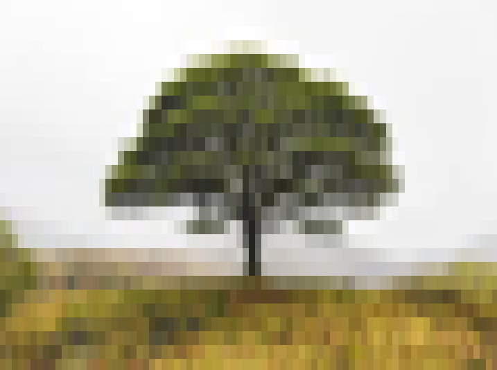

Visuals
Overview
Although NetAF is primarily focused on text and interactive fiction, there are times where adding a visual can enrich the game.
GridVisualBuilder
The GridVisualBuilder class can be used to create a picture that can be displayed in a game:
// create a builder for drawing the tree
var builder = new GridVisualBuilder(AnsiColor.Black, AnsiColor.BrightWhite);
builder.Resize(new(11, 11));
// colors to use for the tree
AnsiColor trunk = new(127, 50, 50);
AnsiColor canopy = new(50, 200, 50);
// draw the tree
builder.SetCell(5, 0, canopy);
builder.DrawRectangle(4, 1, 3, 1, canopy, canopy);
builder.DrawRectangle(3, 2, 5, 1, canopy, canopy);
builder.DrawRectangle(2, 3, 7, 1, canopy, canopy);
builder.DrawRectangle(1, 4, 9, 1, canopy, canopy);
builder.DrawRectangle(0, 5, 11, 1, canopy, canopy);
builder.DrawRectangle(5, 5, 1, 6, trunk, trunk);
// create a frame
var frameBuilder = new ConsoleVisualFrameBuilder(new GridStringBuilder());
var frame = frameBuilder.Build("Tree", "A visual of a tree.", builder, game.Configuration.DisplaySize);
// display the frame in the game
game.ChangeMode(new VisualMode(frame));
This will render the following:

NetAF.Imaging
The NetAF.Imaging extension package can be used to extend the basic NetAF visual functions to allow conversion of images to visuals that can be displayed in a game.
VisualHelper
Generating visuals is made easy with the VisualHelper class. The following example generates a visual on the console:
var displaySize = new Size(80, 50);
var adapter = new SystemConsoleAdapter();
var frame = VisualHelper.CreateFrame(@"C:\TestImage.jpg", displaySize, CellAspectRatio.Console);
adapter.RenderFrame(frame);
This can be used in a game:
var frame = VisualHelper.CreateFrame(@"C:\TestImage.jpg", displaySize, CellAspectRatio.Console);
game.ChangeMode(new VisualMode(frame));
Image a simple room that contains a command to look at the view. The source image for the view is this image:
The code looks like this:
return new Room("Hillside", "A wild hillside with a lone tree", commands:
[
new CustomCommand(new CommandHelp("Look at view", "Look at the current view."), true, true, (game, args) =>
{
var frame = VisualHelper.CreateFrame("visuals-tree-original.jpg", game.Configuration.DisplaySize, CellAspectRatio.Console);
game.ChangeMode(new VisualMode(frame));
return new(ReactionResult.GameModeChanged, string.Empty);
})
]);
And the output looks like this:

Applying Textures
A texturizer can be applied to add extra depth to the image. The ITexturizer interface allows custom texturizers to be created. BrightnessTexturizer adds textures to the visual based on the background color.
var frame = VisualHelper.CreateFrame(@"C:\TestImage.jpg", displaySize, CellAspectRatio.Console, new BrightnessTexturizer());
The texturized image looks like this: